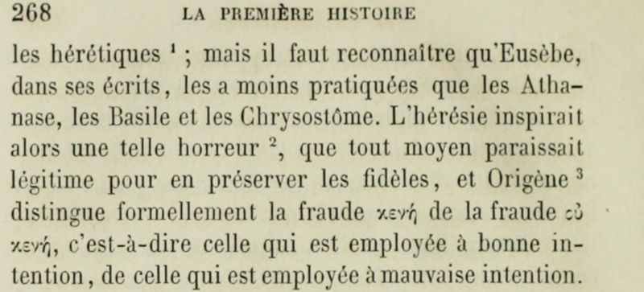
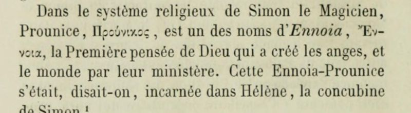

“Fair play against heretics”: Eusebius and the Fathers (pp. 267–268)
French: Paris 1863, essay “La première histoire du christianisme” (on Eusebius), pp. 267–268, scans n274–n275.

[p. 267] … In one passage Eusebius alters the very text of Josephus that he quotes, putting the exterminating angel in place of the owl, the bird of ill omen of which the Jewish historian speaks. … Eusebius has plainly put into Josephus’s mouth a detail taken from the Christian legend of the death of the Jewish tetrarch, a detail he wished to support with the authority of that imposing writer. These little frauds were regarded by the Fathers of that time as fair play against [p. 268] heretics; but it must be admitted that Eusebius practised them less in his writings than the Athanasiuses, the Basils and the Chrysostoms. Heresy then inspired such horror that any means seemed legitimate to keep the faithful from it, and Origen formally distinguishes “empty” fraud (κενή) from fraud that is “not empty” (οὐ κενή), that is, the one used with a good intention from the one used with a bad intention.
Original French
[p. 267] … Dans un passage, Eusèbe altère le texte même de Josèphe qu’il cite, en substituant l’ange exterminateur au hibou, oiseau de sinistre présage dont parle l’historien juif. … Eusèbe a évidemment mis ici dans la bouche de Josèphe un détail tiré de la légende chrétienne de la mort du tétrarque israélite, détails qu’il a voulu appuyer par là de l’autorité de cet imposant écrivain. Ces petites fraudes ont été regardées, par les Pères de cette époque, comme de bonne guerre contre [p. 268] les hérétiques; mais il faut reconnaître qu’Eusèbe, dans ses écrits, les a moins pratiquées que les Athanase, les Basile et les Chrysostôme. L’hérésie inspirait alors une telle horreur, que tout moyen paraissait légitime pour en préserver les fidèles, et Origène distingue formellement la fraude κενή de la fraude οὐ κενή, c’est-à-dire celle qui est employée à bonne intention, de celle qui est employée à mauvaise intention.
Lecky’s ch. IV note 37, on the early Church’s readiness to lie for the faith, cites “the remarks … of Maury (Croyances et Légendes, p. 268)” beside Chrysostom’s praise of deceit in On the Priesthood (see the Chrysostom page). The page fits. Maury’s footnotes give Eusebius, Hist. eccl. II.10 for the Josephus passage and “Origen. Paulli coll., II, 8” for the two kinds of fraud; neither has been checked here.
Simon Magus and Helena, the “First Thought” of God (p. 338)
French: Paris 1863, essay “La Véronique”, p. 338, scan n345.

In the religious system of Simon the Magician, Prounikos is one of the names of Ennoia, the First Thought of God, who created the angels, and the world through their ministry. This Ennoia-Prounikos had, it was said, become incarnate in Helena, Simon’s concubine.
The Barbelonites likewise gave the name Prounikos to Sophia, whom they represented as the first emanation of the first angel. …
Original French
Dans le système religieux de Simon le Magicien, Prounice, Προύνικος, est un des noms d’Ennoia, Ἔννοια, la Première pensée de Dieu qui a créé les anges, et le monde par leur ministère. Cette Ennoia-Prounice s’était, disait-on, incarnée dans Hélène, la concubine de Simon.
Les Barbelonites donnaient également le nom de Prounice, Προύνικος, à la Sophia, qu’ils représentaient comme la première émanation du premier ange. …
Lecky’s ch. III note 23 is attached to his sentence that “Simon Magus had led about with him a woman named Helena, who, according to the Catholics, was simply his mistress, but whom he proclaimed to be the incarnation of the Divine Thought”. Maury’s page says the same, citing Epiphanius, Adversus haereses (“I, t. II, c. II, p. 56, éd. Petau”, his note 1). The note’s further details (the angels warring for her beauty, the Evil One holding her prisoner) are not on this page.
Two pages on, in the same essay (p. 340, scan n347), Maury quotes Epiphanius on the word and adds: “Les lexicographes s’accordent pour attribuer au mot Προύνικος, le sens de lascif, de lubrique” (lexicographers agree in giving the word the sense of lascivious, lewd). This is the source of Lecky’s ch. III note 25, “Prounice properly signifies lasciviousness”, which cites “Maury, Croyances et Légendes, art. Veronica”: “La Véronique” is the running title of these pages.
Further down the rabbit hole
Sources that Lecky cites in the notes next to the ones that cite this page.
- Didron, Iconographie chrétienneHow medieval art pictured Christ the Judge
- Augustine, Contra mendaciumAugustine rejects lying even to catch heretics
- Chrysostom, On the PriesthoodNot praise of lying, but defence of deceit for good ends
- Simancas, De Catholicis InstitutionibusAn inquisitor’s handbook: no faith with heretics, and torture
- Laing, Notes of a Traveller on the Social and Political State of France, Prussia, Switzerland, ItalyThe Swiss, moral in conduct yet irreligious
- Augustine, De TrinitateNobody knows what Christ looked like


Backlinks
Every place in Rationalism in Europe that links to this page (generated automatically when the site is built).